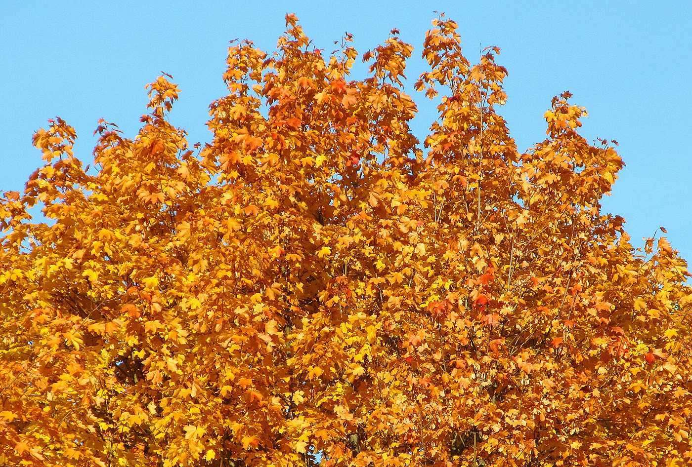

制作側の連想
ボールペンの部位を、配置図にしてみる
ノック式ボールペンの部位を図にしたもので、制作側の連想です。お店の理念・由来とは無関係で、実際の製品の仕様を示すものでもありません。 六つの部位に番号をふり、上の図と並べています。
凡例
六つの部位
- 1ノックボタン軸の上端にある押す部分で、押すたびにペン先が出たり引っこんだりする。
- 2クリップ軸の上のほうに付いた留め具で、胸ポケットや紙の端にはさんで使う。
- 3軸手で持つ筒の部分で、中に替え芯やバネを収めている。
- 4バネ替え芯のまわりに入った小さならせんの部品で、押したあとにもとへ戻す力を生む。
- 5リフィル(替え芯)インクを入れた細い管で、先端にペン先がつながっている。
- 6ペン先軸の先端にある金属の部分で、中の小さなボールが回って紙に線を引く。
写真(イメージ)
写真(イメージ)


写真はイメージです。お店のものではありません。
ご案内
お店のこと(確認できたものだけ)
| 所在地 | 〒321-1403 栃木県日光市下鉢石町９４６ |
|---|---|
| 電話 | 準備中 |
| 営業時間 | 準備中 |
| 定休日 | 準備中 |
| ご予約 | 準備中 |
| 駐車場 | 準備中 |
| SNS | Instagram @yuzawaya1804 |